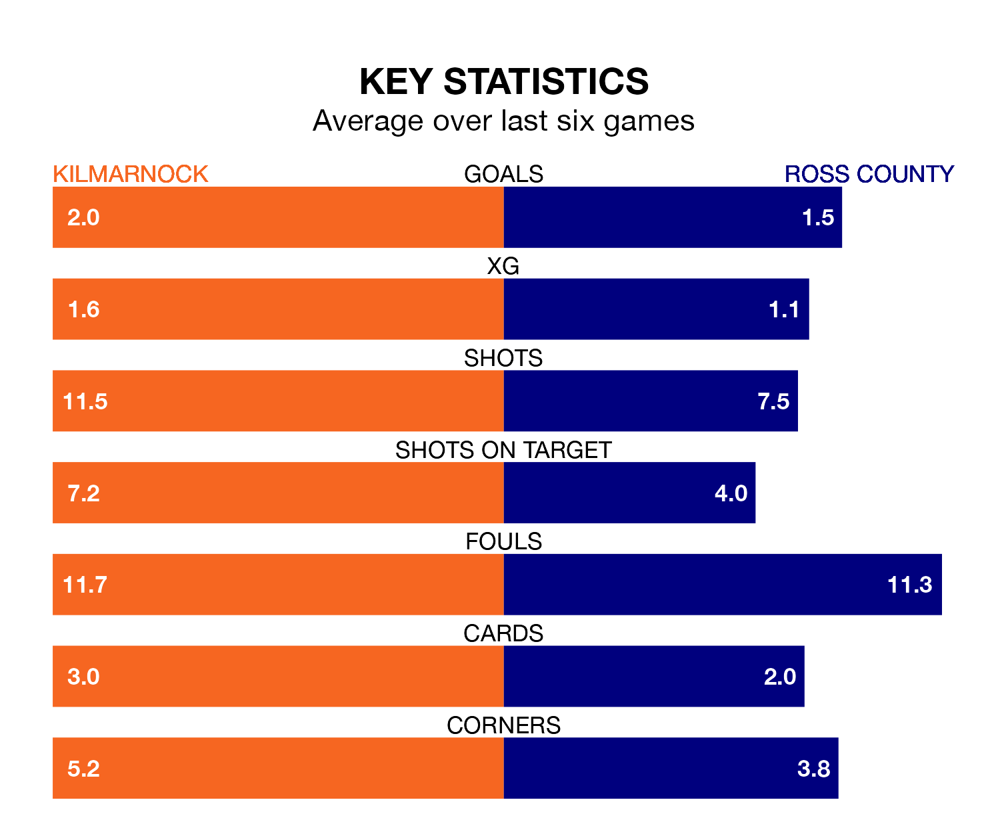

Relegation candidates Ross County face a challenge away against high-flying Kilmarnock at the BBSP Stadium Rugby Park on Saturday.
Ross County are 11th in the Premiership table, and have picked up six wins and nine draws in their 31 games to date.
Killies, meanwhile, are fourth in the standings with 45 points, having won 11 and drawn 12, and are 29 points behind table-toppers Celtic.
In the last 10 years, Kilmarnock and Ross have played each other on 28 occasions. Kilmarnock won eight of them, Ross 15, and they drew five times.
On average, Killies scored 1.2 goals and the Staggies 1.7 in those matches.
Their last meeting was on November 25, when they played out a 0-0 draw.
With 29 goals in 31 games so far this season, Ross are the league's third-lowest scorers with 0.9 goals per game. And they are conceding more than average, letting in 53 goals at a rate of 1.7 per game.
Kilmarnock, meanwhile, are average scorers, with 1.3 goals per game. They have conceded 1.1 goals per game.
In Will Dennis, Killies can rely on one of the league's safest pair of hands. He has kept 10 clean sheets in his 30 appearances this season in the Premiership.
In County's net, Ross Laidlaw has six clean sheets in 19 games. He has conceded a goal every 63 minutes, 50% more often than the 95 minutes between goals for Dennis.
The home side are in mixed form in the Premiership, with two wins and three draws from their last six games.
With two wins and two draws over that period, the Staggies' form is slightly worse – they have taken eight points from 18, compared to Kilmarnock's nine.
Kilmarnock's last match was on Saturday, a 1-1 draw against Hearts, with Marley Watkins getting the goal for Killies.
Ross lost 2-1 against Aberdeen last time out, also on Saturday, with Simon Murray on the scoresheet.
Saturday's match will be refereed by Euan Anderson, who has taken charge of eight Premiership games so far this season, issuing no red cards and booking 22 players. He has awarded three penalties.
The last Kilmarnock game Anderson refereed was a 1-0 away win against St. Mirren on December 27. His last Ross match was their 1-0 loss away at Celtic on January 27.
Updated: 16:41 (UTC), 04/04/24